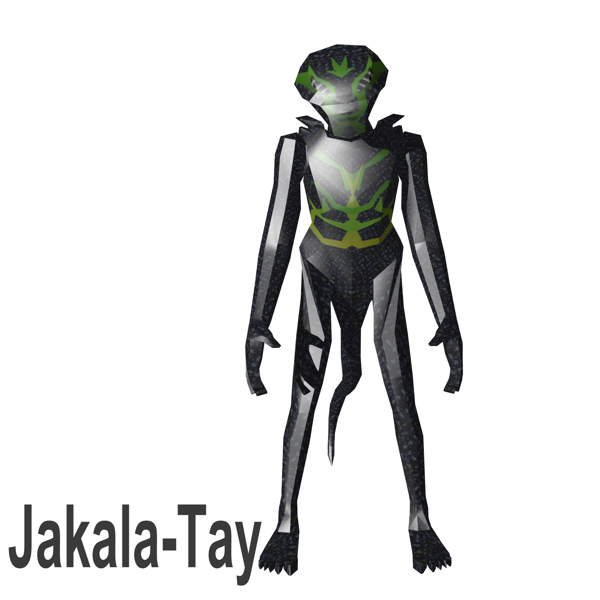

Image Captions Using CSS3

Akona
| Needs | Location of Information in Alien Database |
| Temperature: 10K to 100K |
Habitat, Inhabited Worlds: Akonid |
| Carbon, Nitrogen | Food |
| Minimal atmosphere | Dwellings |
| Hard surface | Dwellings |
| None | Body |
| Mountains | Inhabited Worlds: Akonid |
| Gravity: 1/8 Earth’s |
Inhabited Worlds: Akonid |
Eolani
| Needs | Location of Information in Alien Database |
| Oxygen in atmoshpere | Habitat |
| Water | Habitat |
| Temperature: Prefers 270-300K; can raise 100K using technology |
Habitat, Technology |
| No seismic activity | Dwellings |
| Gravity: about 1/4 Earth’s |
Inhabited Worlds: Eola |
| Magnetic field | Inhabited Worlds: Eola |

Jakala-Tay
| Needs | Location of Information in Alien Database |
| Sulfur in atmoshpere | Habitat |
| Nitrogen | Food |
| No hydrogen | Habitat |
| Metals | Dwellings |
| Tolerates earthquakes | Dwellings |
| Temperature: 200-500K |
Inhabited Worlds: Tay |
| Gravity: 1/3 Earth's |
Inhabited Worlds: Tay |
Kaylid
| Needs | Location of Information in Alien Database |
| Oxygen, sodium | Technology |
| Caves | Habitat, Inhabited Worlds: Kayl |
| Iron and nickel | Inhabited Worlds: Kayl |
| No strong earthquakes | Inhabited Worlds: Kayl |
| Temperature: 100K - 650K (sleep below 250K) |
Inhabited Worlds: Kayl |
| Gravity: 1/2 Earth's |
Inhabited Worlds: Kayl |
Sylcari
| Needs | Location of Hint in Alien Database |
| water, ocean | Body, Habitat, Inhabited Worlds: Sylcar |
| calcium (for melk) | Dwellings |
| gravity about one-fifth of Earth’s | Inhabited Worlds: Sylcar |
| needs atmosphere | Food |
Wroft
| Needs | Location of Information in Alien Database |
| Thick atmosphere | Habitat |
| No lightning | Habitat |
| Carbon in atmopshere | Food |
| Sulfur; not necessary | Food |
| No magnetic field | Body |
| Gravity: 1/6 Earth's; not important |
Habitat, Inhabited Worlds: Wroft-Gar |
| Temperature: 400K near surface, 100K high in atmosphere |
Habitat, Inhabited Worlds: Wroft-Gar |